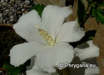
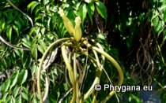
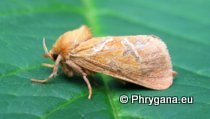
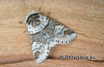

;
| Phrygana: la Nature entre le Kédros et la mer Libyenne (principalement), ailleurs aussi au gré des rencontres... |
;
|  |  |  |  |
| Hibiscus syriacus | Radermachera sinica | Triodia sylvina | Furcula furcula |
| Espèces: 543 --- Faune: 253 -- Flora: 288 -- Galles: 2 | |||||
| Nouveautés | |||||
| Fauna: | Laothoe populi | Fauna: | Mimas tiliae | Fauna: | Deilephila elpenor |
| Fauna: | Agrius convolvuli | Fauna | Pammene aurana | Flora | Styrax officinalis |
| Fauna: | Herpetogramma licarsisalis | Flora: | Verbascum sinuatum | Fauna | Capnodis tenebrionis |
| 19 octobre 2014 |
| Photographies © paul fontaine |
| No part of this work may be used for
commercial purposes without the written permission of the author. Aucune utilisation commerciale n'est possible sans l'autorisation écrite de l'auteur. |